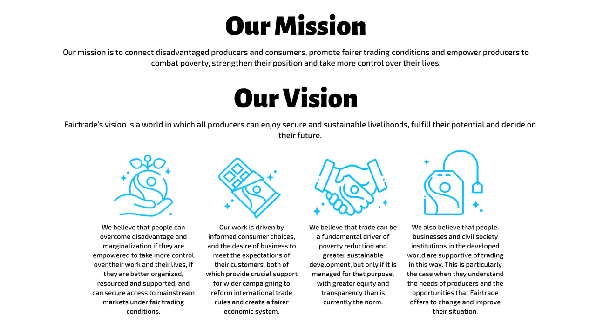
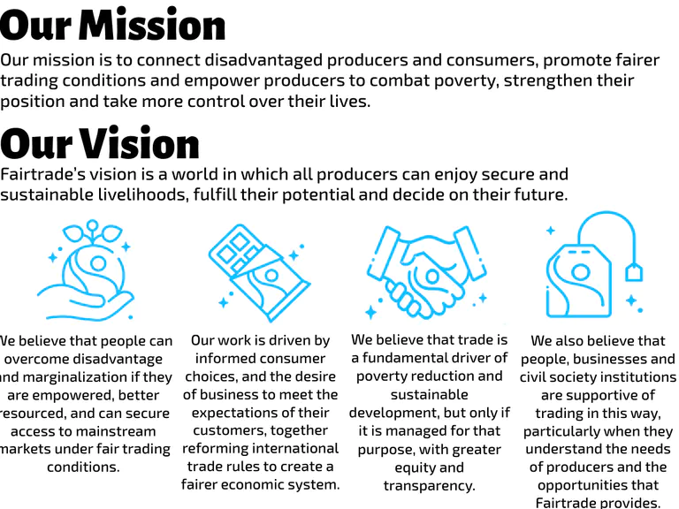
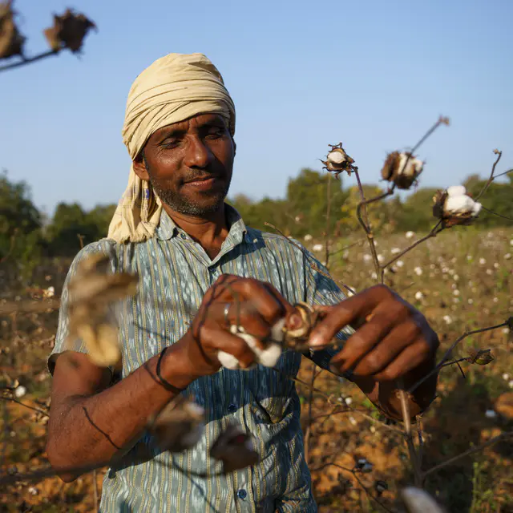

About Us
Fairtrade is a global movement reshaping the way the world does business. We challenge the status quo of exploitative trade and support a system rooted in dignity, equity and shared prosperity so that the people who grow our food and goods have a voice, receive a fairer price and have the power to shape their own futures.
Fairtrade Brings People Together
Many of the products we enjoy every day – coffee, chocolate, bananas – have traveled over thousands of miles of oceans and through countless hands to land in stores in the United States. Fairtrade brings together all of these people - the farmers and the brands, the schools and the champions of advocacy, the retailers and the shoppers - to create a more equitable world through trade.
- Over 2 million farmers and workers worldwide are Fairtrade certified
- 50% of the voting members at our General Assembly are Fairtrade farmers and workers.
- 2,500+ brands offer 36,000 Fairtrade certified products globally.


Fairtrade is Complex, the Solution is Simple

Our People
We are an independent non-profit 501(c)3 organization.